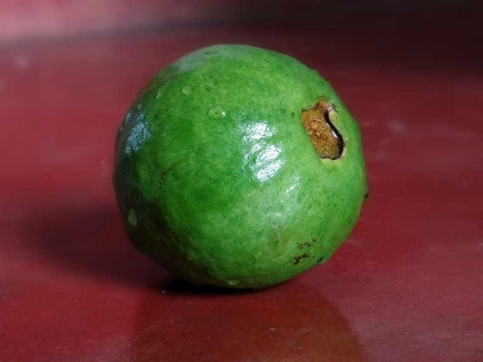

Even though, native to tropical America, India has established it as the largest Guava (Psidium guajava) producing countries in the world (as per 2016 data source). In terms of the fruit value, it ranks fourth in following mangoes, bananas, and citrus. Bihar, Uttar Pradesh, Maharashtra, Andhra Pradesh, Tamil Nadu, West Bengal, Orissa apart from Punjab and Haryana are some of the leading states in India that grow guava. The major countries import guava from India includes the US, UAE, Netherlands, Saudi Arabia, Jordan, and Kuwait.
Best grown in tropical and subtropical region up to 1500 mt. above sea level
| Temperature | Rainfall | Soil |
|---|---|---|
| 15–30° C | 100 cm | While the hardy crop offers best productivity when grown in sandy loam/clay loam well drained soil, it equally grows well in any class of poor to alkaline soil types. The pH level of the soil should be within the range of 6.5 to 7.5. |
There are different types of guava available in India for commercial cultivation of guava.
Aside from the above, guava grows in profuse varieties including Baranasi, Harijha, Red Fleshed, Punjab pink, Sardar, Baruipur, KG guava and hybrids like Kohir Sofeda, Akra Amulya etc. There are some popular foreign breed also for guava plantation like Taiwan guava.
Air layering or stooling procedure has been popular as the easiest and affordable way to propagate guava plants. In fact, growing guava plants from seeds is not only challenging but mostly results poor fruit quality and yield. All you have to do to make your vegetative propagation truly productive is appropriate choosing of plants that produce high quality fruits that help propagate new plants having the attributes of mother plant. Now choose branches of a pencil diameter which should not be near any joining part. Peel the branch skin measuring of 2″ length. Drench the peeled area with rooting substance like NAA 500 PPM OR IBA 500 ppm. Use moist moss on it and then wrap it with polythene sheet. Both ends should be kept open. After 20-25 days root with grow from the cutting branch. July to September is the suitable time to undertake layering.
Cut about 6″ of the branch just above the newly grown root and take it out. Plant the seedlings in the nursery bed or pot and water regularly to grow as single plants with fresh branches and new leaves. The seedling is now ready for planting.
Meanwhile the land should be prepared during the dry days by ploughing, leveling, and weeding. Dig pits measuring 1mx1mx1m before monsoon begins. Fill each hole with farmyard manure @ 25 Kg, SSP@500 gram, Neem Cake @15 Kg, Lindane powder@ 50 gram together with soil for needed fertilization as well as avoid termite invasion. Showing needs to be done during Aug – September for optimal result. (February and March is also chosen for planting). Maintain a sowing dept of 25-30 cm.
While it’s recommended to determine the suitable planting distance of 5-8 meter depending on the type of guava species, soil fertility and watering facility, maintaining a standard spacing of 6m x 6m with 112 plants per acre is the best choice that helps plants grow and maximize yield potential.
Pruning and training should be given special importance to produce guava plants with resilient framework capable to support higher yield. Pruning should be practiced on a regular basis to discard the infected, diseased, and dead branches. However, avoid pruning during summer to protect the budding plants from sunburn. When guava seedlings grow, provide necessary support to let them stand upright with their strong stem. In order to check weed growth consider spraying plants with Gramoxone@5ml /liter of water/ per acre during March, July, and September. 200Ltr is adequate to spray one acre land.
Cultivators can opt for inter-cropping during the first 3-4 years to produce legumes crops such as beans, gram, or vegetables like carrot, radish, okra etc. and earn before getting the yield from principal plant guava.
Guava shows better growth under rainfed weather condition, however, draining is equally essential. Depending on the type of climate, during the dry season, irrigate the plants weekly once whereas in the winter, maintain an interval of 3 weeks. Drip irrigation is ideal for better plant growth and void fungus infestation.
| Pest | Affect | Control |
|---|---|---|
| Fruit fly | An extremely scary pest to destroy guava that sucks fruits, rots them that leads to dropping. | Remove infested fruits and spray plants with Fenvalerate@60ml in 100Ltr of water/ 1 acre before the fruit ripening season comes and provide in weekly intervals. |
| Mealy bug | Suck juice from different parts of the plant and weaken them. | Once observed control the pest attack with Chlorpyriphos 50EC @350ml/100 liter water and spray plants spreading per hectare land. |
| Shoot borer | Typically found in nursery or in seedling stage, the pest used to infest plant shoots and causes drying. | To control, make use of Quinalphos@400ml/Chlorpyriphos@500ml mix with 100 liter water per acre and spray. |
| Disease | Symptoms | Management |
|---|---|---|
| Wilt | Very severe disease of Guava plant that causes wilting and yellowing of leaves and cause drying the plant due to fast infestation. | Ensure that the field is properly drained, and in case of flooding, pump out logged water without delay. Remove already infected and destroyed plants from the cropping land and drench soil with Carbendazim@25gmor Copper oxychloride@30gm per 10Ltr of water and spray. |
| Dieback or Anthracnose | Black or brown are typically noticed on plant shoots as well as on fruits. Dieback is a fast growing disease which can rot fruits just in 2/3 days once infected. | Discard fruits even those having 1% infection to avoid epidemic. Keep the land well cleaned and avoid water logging under all circumstances. Undertake a pruning session and use spray Captan@300gm mixing with 100Ltr water. Continue spraying those plants and infested areas of the plant for 15 days without any interruption. Spraying of Copper oxychloride@40gm/10Ltr water can also be considered to drench infected trees. |
| Aphid | A common pest of Guava plantation that sucks the juice within the plant and dries them. Infestation typically deforms young leaves while curing them. | For absolute management, fresh leaves need to be sprayed with Methyl Demeton@20ml or Dimethoate@20ml/ 10Ltr |
Depending on the variety of guava, generally cultivators find plants to carry fruits from 2-3 years of their ageing, however, the vast majority attain their pick productivity point at the age of 7-10 years. Consider the maturity of the fruits with their color and decide if they’re ripened enough to be harvested. Cultivators depending on local market can go for harvesting as the fruits become fully matured while for distance marketplaces, fruits should be picked prior to their fully ripened stage. Fruits should be collected from plants together with their stalks and leaves.
Grade according to color, weight, and size.
StorageFruits can be stored for 7-10 days at 18°-23° C in a polybags with ventilation 0.25%. To extend shelf-life up to 20 days, harvested fruits require low temperature about 5°-6º C with 75-85% relative humidity.
Uses of Guava FruitGuavas are highly rich in vitamin C, folic acid, dietary fiber, and essential nutrients. The fruit contains vitamin four times higher than an orange. It is also a steady source of pectin, calcium and phosphorous. Apart from being the most preferred fruit to people from all classes of the society due to its great nutritional value and low-cost, it is used widely in food processing industries to produce demanding products like jam, jelly, nectar. It is also used in preparation of juice, sources, ice-cream, puddings, and cakes.
Guava has high demand and known as “apple of the tropics”. That is why starting a guava plantation in India can be very profitable. Just make sure to plant the best guava variety which has ideal climatic conditions and demand in your locality.